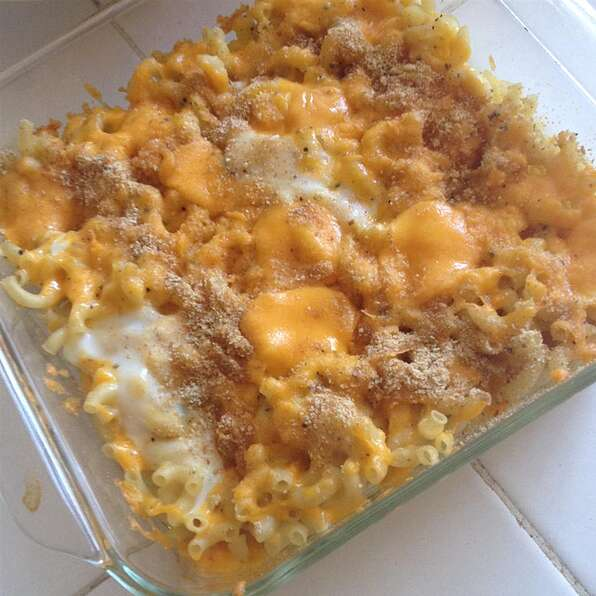

Home
Baked Macaroni and Cheese

Description
A simple yet delicious recipe for baked macaroni and cheese using only six ingredients!
Ingredients:
- 1 (16 ounce) package macaroni
- 2 eggs
- 1/4 cup milk
- Ground black pepper to taste
- 1 (16 ounce) package sharp Cheddar cheese, shredded
- 2 tablespoons butter, sliced
Steps
- Preheat oven to 350 degrees F (175 degrees C).
- Bring a large pot of lightly salted water to a boil. Add macaroni and cook for 10 to 13 minutes or until al dente; drain.
- In a bowl mix together the eggs, milk, and pepper. In a casserole dish, place about a third of the cooked macaroni in one layer,
sprinkle with 1/2 of the cheese, then layer the rest of the macaroni and cover with the remaining cheese. Coat evenly with the egg-milk mixture.
Lastly, cut slices of butter and place them on top of the cheese.
- Bake in a preheated oven for 30 minutes or until the cheese is completely melted.